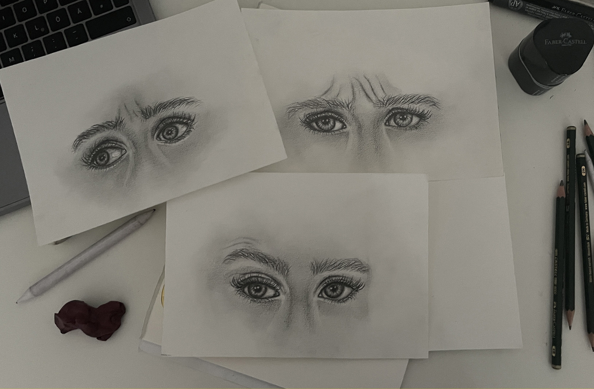
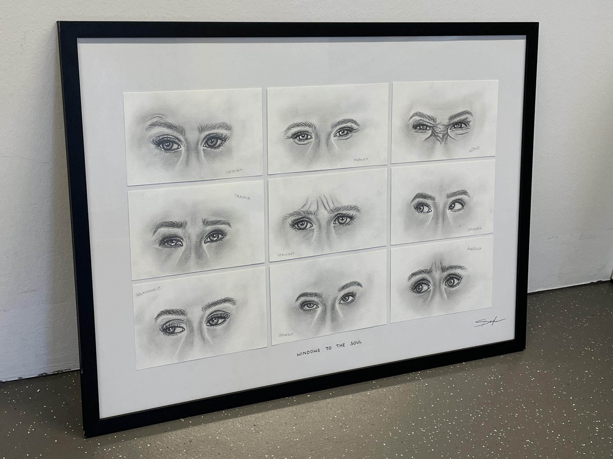
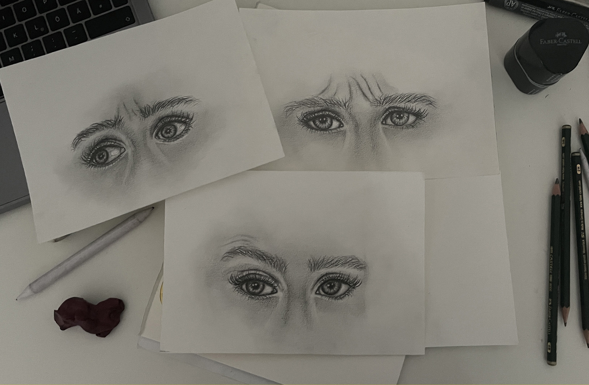
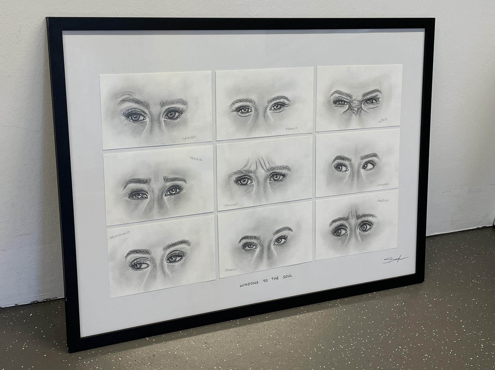

windows to the soul
2023
For this project, I focused on capturing various emotions solely through the
detailed portrayal of the eyes. Using pencil as my medium, I paid special attention to accurately rendering
the pupil and its reflections. Each drawing aims to convey a range of emotions, showcasing the depth and
complexity of human feelings with precision and authenticity.
 


